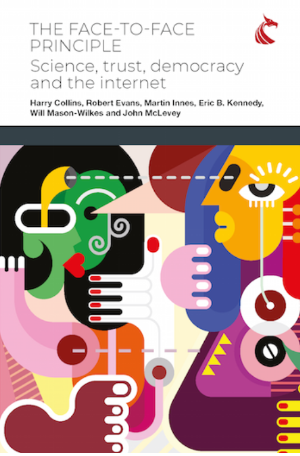

The Face-to-Face Principle and the Internet
Description
The internet is changing the way that knowledge is made and shared. Knowledge-making in face-to-face settings is being replaced by information gathering from remote sources, whose origins may be concealed but which can create an illusion of intimacy. Though remote communication is beneficial in many ways – modern societies would fail without it – and though the tight boundaries of the face-to-face can be used for evil purposes such as criminal conspiracy, if the overall trend to remote communication continues unchecked, it could be disastrous for the future of democracy and the very idea of truth itself. Too much reliance on remote communication threatens the core institutions of democratic societies.
We explain the change in technical detail, from a systematic analysis of the workings of the face-to-face to a high level setting-out of its dangerous political implications. The analysis includes field studies, reflexive examination, drawing on the wide experience of the authors, of the stickiness of the face-to-face in our own work and other institutions, and network analysis which explains the illusion of intimacy that can be generated inadvertently or maliciously. We look at the apparent effectiveness of techniques such as blockchain and the limits of their domain. New information is provided about the malicious use of disinformation by foreign powers. We dramatise the dangers to Western pluralist democracy through a personal accounting of the 2020 American election.
By drawing out the special features of face-to-face interaction and its constitutive role in creating societies, with science as the icon, the book sets out an agenda for civic education that can protect democratic institutions from the erosion of pluralism and the facile abandonment of trustworthy expertise. The authors conclude by returning to the themes set out at the start of the book, namely the crucial role played by trust in modern societies and the importance of face-to-face interactions in reproducing that trust, and the democratic institutions in which it should be invested.
Contents
Introduction - The Wide Reach of the Argument
Part I: Foundations – Communication, Socialization and Trust
- What Trust and Communication Are For
- Forming Societies and Learning to Trust and to Rely
- Completing the Story of Face-to-Face Communication
Part II: Arguments and Evidence – Can Remote Communication Replace Face to Face?
- Remote Technology and Trust
- Can Remote Replace Face-to-Face Communication?
- Small Groups to Big Groups: When Big Groups Are Trustworthy
- The 'Stickiness' of Face-to-Face Communication: Some Case Studies
- When Remote Communication Is Not Trustworthy
- Disinformation and Misinformation
Part III: Consequences – Science, Truth, Democracy and the Nature of Society
- Some Immediate Consequences of the Coronavirus (COVID-19) Pandemic for Science
- The Nature of Democracy and Scientific Expertise
- What Is to Be Done?
Postscript - The November 2020 Election in the USA
Appendixes
- Propaganda and Other Traditions
- (i) Coronavirus (COVID-19) Disinformation, (ii) Update on Disinformation in General, and (iii) a Warning about How Not to Fix the Problem
- The Delineated Cases of Citizen Participation in Science and Technology
- An Alternative View: Successful Business Interaction Without Face-to-Face Communication
- Second Language Learning